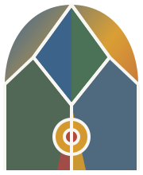
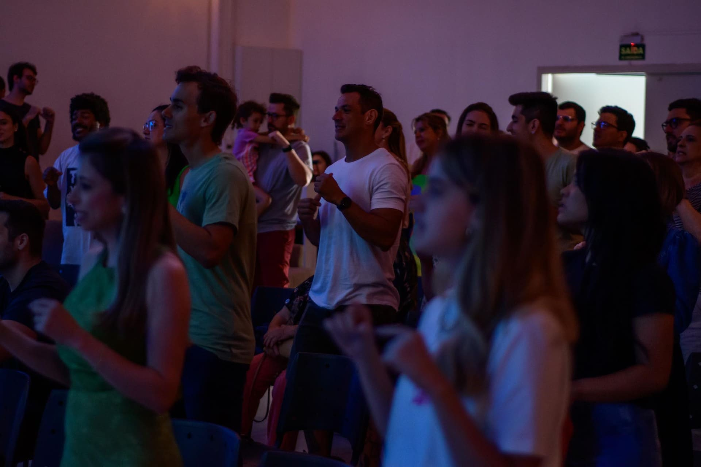
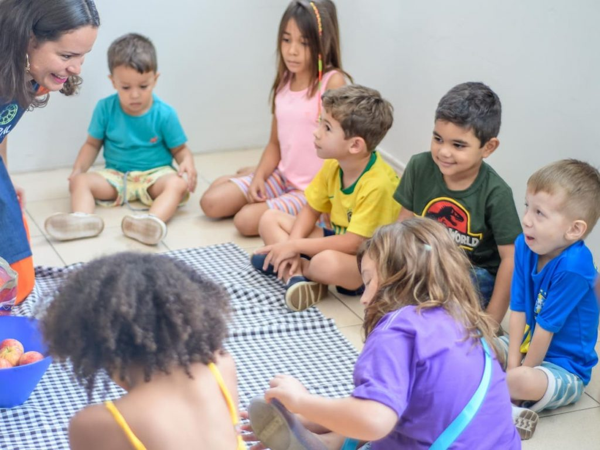

venha como você está
Porque aqui é proibida a entrada de pessoas perfeitas.

menos programas. mais relacionamentos.
A Vitral tem como "sobrenome" o termo "igreja em pessoas". Isso significa valorizar relacionamentos em tudo o que fazemos. Por isso, a comunidade não é baseada em programas, ou seja, encontros, atividades, cursos, etc. Mas isso não quer dizer que os programas não são importantes. Através deles todos podem se aproximar, mas ninguém depende de um programa para desenvolver relacionamentos com os outros e com Deus.
Uma igreja para a cidade
reflexão. transformação.

A Vitral se preocupa em compreender os valores e o estilo de vida das pessoas no contexto urbano para traduzir os ensinos de Jesus e aplicá-los ao nosso dia a dia sempre dialogando, acolhendo e respeitando quem pensa diferente. Fazemos isso para reconstruir as pontes entre a igreja e a sociedade que foram destruídas ao longo dos anos.
Nossa história
A Vitral nasceu em 2014, através de uma parceria entre igrejas e fundações para a plantação de uma nova igreja na região leste de São José do Rio Preto.
Mas por que uma nova igreja em uma cidade cheia de igrejas? Para dialogar com a sociedade sobre temas que nunca estariam em um templo religioso, para apresentar um evangelho que não pede ofertas ou promete "bênçãos" a quem é "fiel" e que seja relevante para os dias de hoje.
Sobre a VitralUma comunidade que ama as crianças
A Vitral apresenta as histórias da Bíblia e os conceitos do Reino de Deus para as crianças na linguagem que elas entendem, apoiados por um material pedagógico desenvolvido a partir de propostas contemporâneas de ensino-aprendizagem e uma equipe de facilitadores em constante treinamento.

Desde o nosso início decidimos ser uma comunidade inclusiva para as crianças. Por isso em todas as nossas atividades buscamos integrá-las com as demais gerações e ser sensíveis às necessidades delas e dos pais.
Não temos problema em falar sobre isso.
Clique e conheça a nossa visão sobre esse tema tão delicado nos dias de hoje.